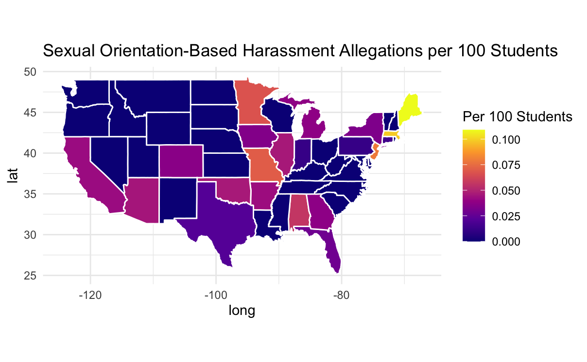
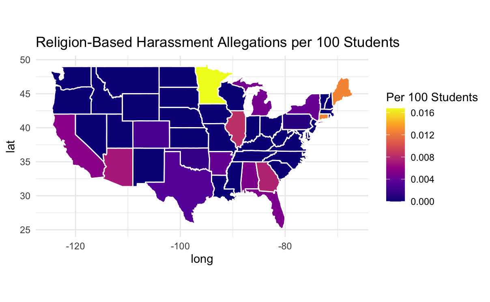
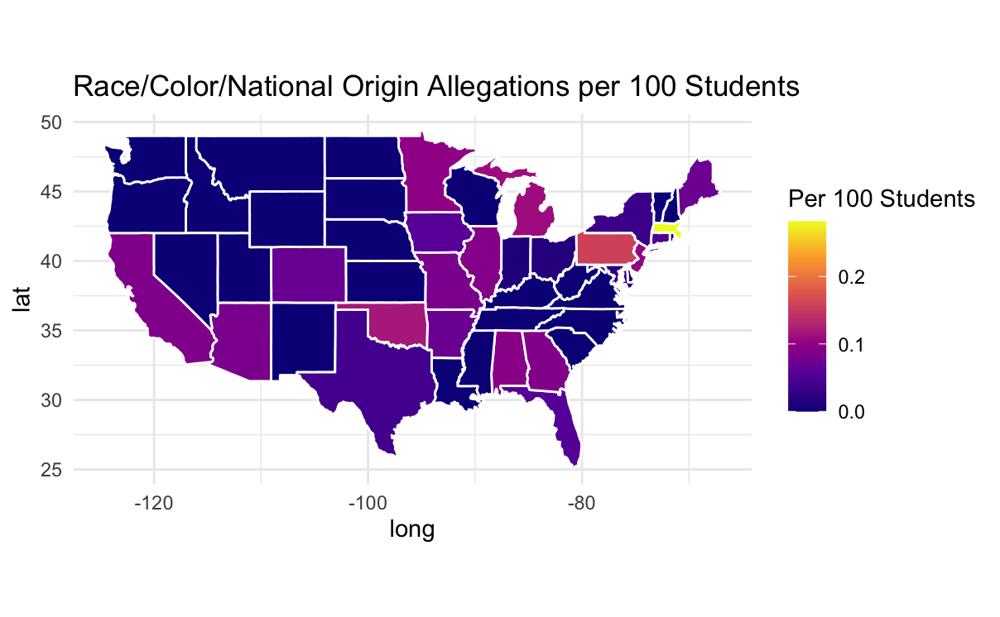
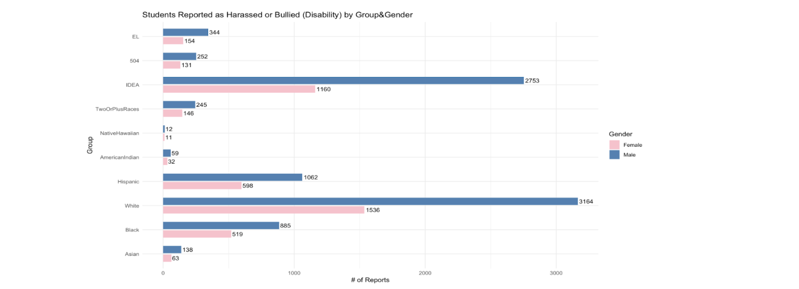

1 Introduction
This week, we worked on expanding our analysis of school-based harassment and bullying allegations. Our focus was on understanding geographic variation across the United States and identifying which types of allegations are most common in different areas when normalized for school size.
We also began the process of combining multiple datasets to deepen our analysis. Specifically, we joined together student enrollment data with harassment and bullying allegations data, using school ID (SCHID) as a common key.
2 Datasets and Merging Process
We are combining two main datasets:
- Enrollment data – which includes the number of students enrolled in each school, broken down by race, gender, and demographic categories (e.g., EL, IDEA).
- Harassment and bullying allegations data – which includes counts of allegations by type (e.g., sex-based, religion-based, etc.) at the school level.
These datasets were joined using the SCHID column, which uniquely identifies each school. After cleaning (removing negative values, summing rows, and normalizing counts), we calculated the number of allegations per 100 students for each school and then aggregated them to the state level.
The goal was to create normalized state-level comparisons to account for differences in population size.
2.1 Challenges
While the join between the datasets was successful, we encountered a few key issues:
- Some
SCHIDs existed in the enrollment file but not in the allegations file (and vice versa). - States such as Montana, Idaho, and Nevada were initially missing from maps due to unmatched or filtered out data.
- We needed to perform a
left_joininstead of aninner_jointo preserve all schools and treat missing allegations as zeros.
We resolved this by carefully tracking which states and schools were being dropped and ensuring a complete join structure by using replace_na().
3 Maps by Allegation Type
To investigate patterns more deeply, we created choropleth maps of the United States for each major category of harassment. These maps visualize the number of allegations per 100 students by state.
4 Sexual Orientation-Based Allegations
This map shows the normalized rate of allegations based on sexual orientation.
- Massachusetts, New York, and New Jersey all had high rates.
- The northwest region showed very few or no reported cases.

5 Religion-Based Allegations
This map highlights religion-based harassment allegations.
- While overall rates were lower compared to other categories, Massachusetts again stands out.
- States like Utah and Idaho had zero or near-zero cases.

6 Race/Color/National Origin Allegations
This map displays allegations of harassment due to race, color, or national origin.
- Massachusetts once again leads, followed closely by New York and California.
- The southeast and parts of the northwest had lower reported rates.

7 Disability-Based Allegations
This map highlights harassment allegations reported by students with disabilities.
- Massachusetts has the highest rate, continuing the trend.
- We noticed more variation across states in this category compared to religion-based or sexual orientation-based allegations.

8 Key Takeaways
From our maps, we noticed several trends:
- Massachusetts consistently reports high normalized allegation rates across all categories.
- The Northwest (e.g., Montana, Idaho, Wyoming) tends to report few or no allegations.
- Some categories like religion-based harassment had lower rates nationwide, potentially due to underreporting or smaller affected populations.
9 Focusing on Massachusetts
Because Massachusetts ranks the highest across multiple allegation types, we plan to narrow our focus to this state in the coming weeks. This will allow us to explore trends at the district or school level and potentially bring in other data such as:
- Demographics (e.g., income, race/ethnicity, urban/rural classification)
- School resources (e.g., staff-to-student ratios, counselor availability)
- Community characteristics
10 Next Steps
For the next phase of this project, we plan to:
- Further explore school-level trends within Massachusetts
- Investigate whether specific schools or districts are driving the state’s high rates
- Look for additional datasets that we can combine, such as:
- Public school performance data
- Census-based community demographics
- School funding or resource availability
By integrating these, we hope to better understand what underlying factors may be contributing to Massachusetts’s higher rates — whether it’s reporting culture, student population, or other institutional variables.